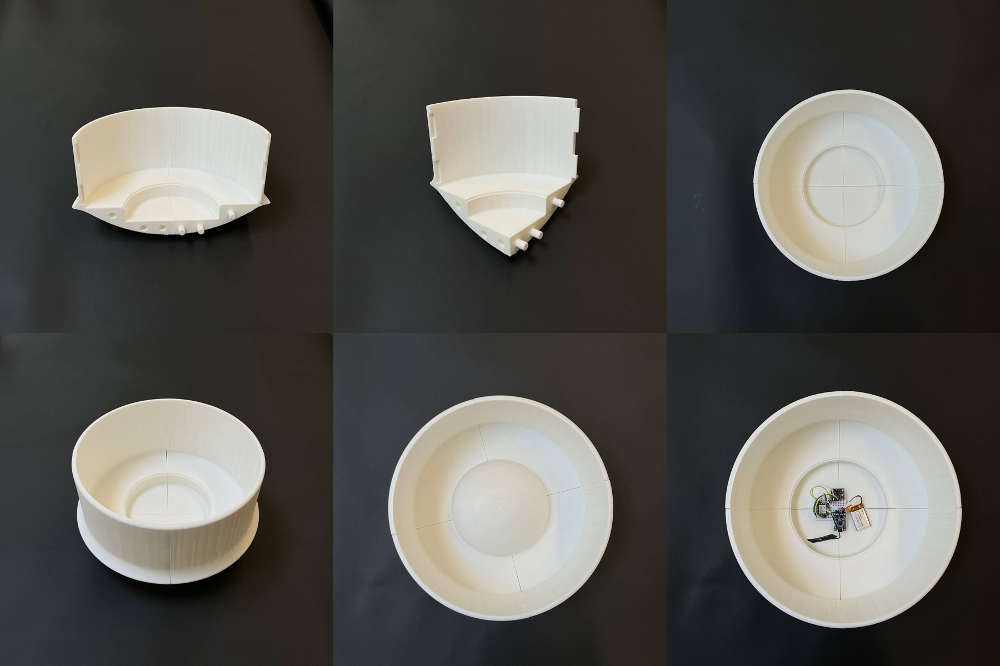
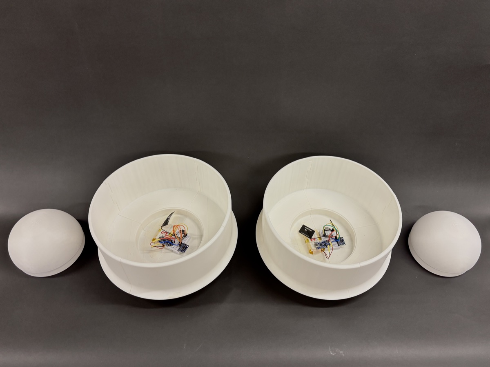
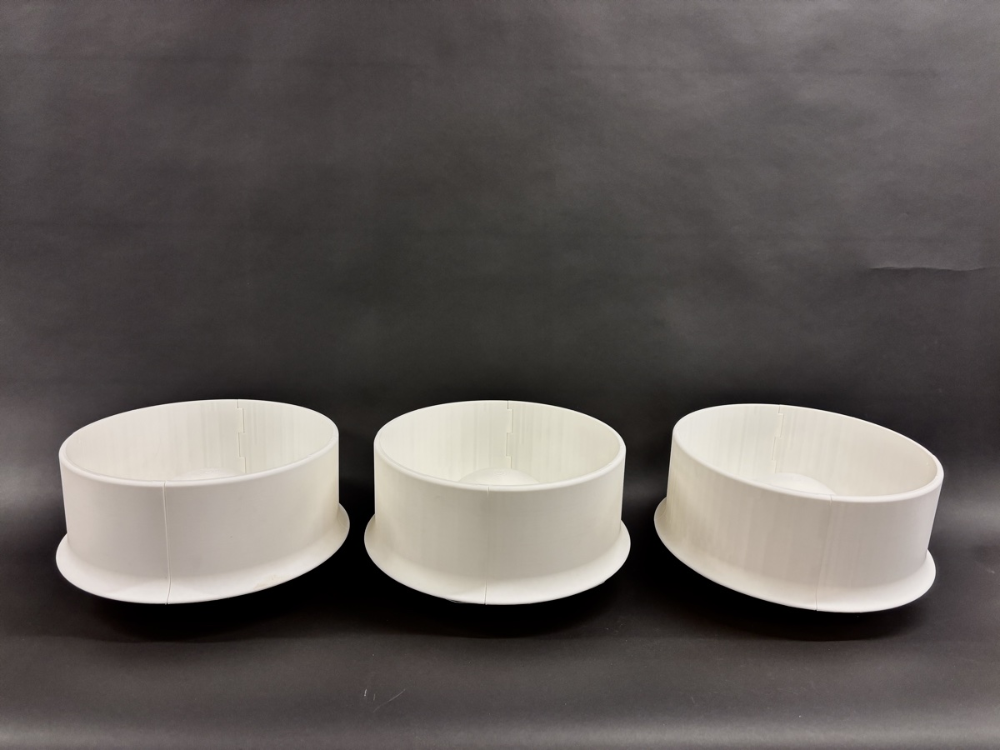

Bu Dao Weng
Prototyping, Robotics Engineering
MIT 4.021 Final Project
2025
Student
Bu Dao Weng creates a space of playful nostalgia and introspection for the student center. It was built for MIT's Introduction to Design final challenge, which asked us to create a prototype that plays with sight, sound, and touch. The piece is based on the traditional Chinese Bu Dao Weng doll, a toy that always centers no matter how hard you tip it, and it recreates that same physical balance while adding musicality through blending chords. Rotating and tilting it plays different instruments that layer together into harmonies, so the sound actually changes live as people interact with it.
Challenge
MIT's 4.021 Introduction to Design final challenge asked our team to design an inflatable installation that engages sight, sound, and touch, sited somewhere on campus that would genuinely benefit from it. Precedents like Pneuhaus's Compound Camera and their tactile light installation at Harvard's Diatom House showed how an inflatable could shape mood through light, motion, and touch, but most examples we found were large single pieces meant to be viewed rather than personally handled. We wanted something smaller and more intimate, built for a space where students actually pause and decompress rather than just pass through.
Approach
We compared several high-traffic sites, including Lobby 7, Lobby 10, and Kresge lawn, before choosing the Stratton Student Center's first floor for its warm ambient lighting, neutral-toned architecture, and open floor plan, a calm backdrop suited to introspection rather than spectacle. We based the concept on the traditional Chinese Bu Dao Weng (不倒翁) doll, a toy that always rights itself no matter how it's tipped, and worked through about 20 sketches, from an early coral-inspired form with embedded LEDs, speakers, and pressure sensors, to a simpler design built around accelerometers that detect tilt and trigger sound.


Solution
Each doll keeps a uniform, weighted base that houses the electronics and always returns itself to center, while the top half is left open to varied, abstract shapes inspired by designs like the Teletubbies, giving each one its own character while keeping the underlying mechanism consistent.
An onboard accelerometer detects when a doll is tilted off center and triggers a sound, so rocking and tilting it plays and layers different notes live, turning a simple physical gesture into an evolving, personal soundscape.

Outcome
The result is a small family of self-righting, sound-reactive dolls designed for MIT's Stratton Student Center, where students can sit with, tilt, and rock them individually or in small groups to layer their sounds together. Rather than one large installation meant to be observed, Bu Dao Weng invites direct, one-on-one touch, turning a moment of fidgeting into a small, playful piece of music.